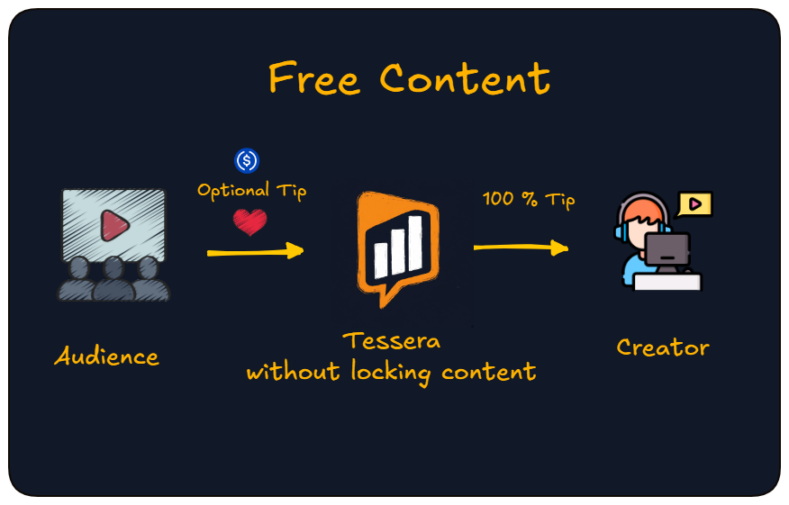
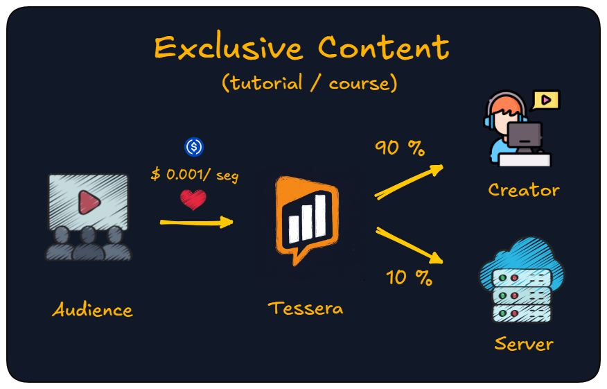
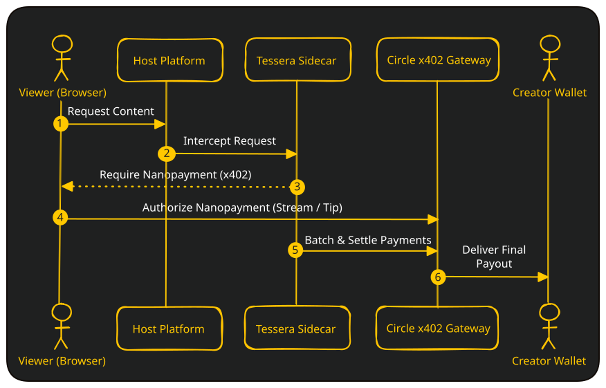

Tips on free content
The resource stays open. Viewers see an optional USDC tip button when they want to support the creator.
Tessera is a support engine. Your audience tips or pays per second while they stay on your app. Creators and instance admins receive testnet USDC. Free content stays free.
Pick the model that fits each piece of content. No full-course purchase. No forced subscription.

The resource stays open. Viewers see an optional USDC tip button when they want to support the creator.

Tutorials, courses, premieres: billing runs while they watch and stops when they leave. Ten minutes watched means ten minutes of support.
Optional tips on free content. On exclusives, pay only for the seconds they actually consume. Leave anytime.
Direct audience support in USDC: tips or time-based billing on premium resources.
Configurable share on time-based content (default about 10%) to help cover hosting.
Try Tessera on PeerTube, Jellyfin, or Piwigo. Sign in with email OTP, fund with test USDC, then tip or watch an exclusive.
Open a premium video to see the paywall and per-second billing. Open a free video for the tip button. Sign in with Circle (email OTP), fund your wallet from the faucet or bridge, and support creators without leaving PeerTube.
Open an exclusive item for the paywall and per-second billing. Open a free item for the tip button. Sign in with Circle (email OTP), fund your wallet from the faucet or bridge, and support creators without leaving Jellyfin.
Open any photo for an optional USDC tip. The gallery stays free; the tip is only if you want to support the photographer. Sign in with Circle (email OTP), fund your wallet, and tip without leaving Piwigo.
Install Tessera, then the plugin for your platform. Settings live in each repo.
Three simple steps for viewers. Under the hood, Tessera coordinates USDC stream or tip payments through Circle Gateway.
Create a Circle wallet with email OTP. Add test USDC via faucet or bridge from another testnet chain.
Tip on free videos with one click. On exclusives, the paywall unlocks playback and billing runs per second while you watch.
Billing stops when you close the player or pause. Unused USDC stays in your session for next time, or withdraw to your wallet.

On traditional rails, a small tip dies in fees. On Arc Testnet, gas is USDC and network costs are cents, not dollars.
Circle Gateway keeps support off-chain while people consume: each tick is an authorization, not a blockchain transaction. Settlement batches on Arc when needed.
Viewers can fund from other testnets using CCTP. Tessera's bridge UI handles the path to Arc so you are not stuck wiring wallets manually.
Tessera speaks HTTP: start, stop, and tips. Ship a plugin or webhook on your platform; no fork required.